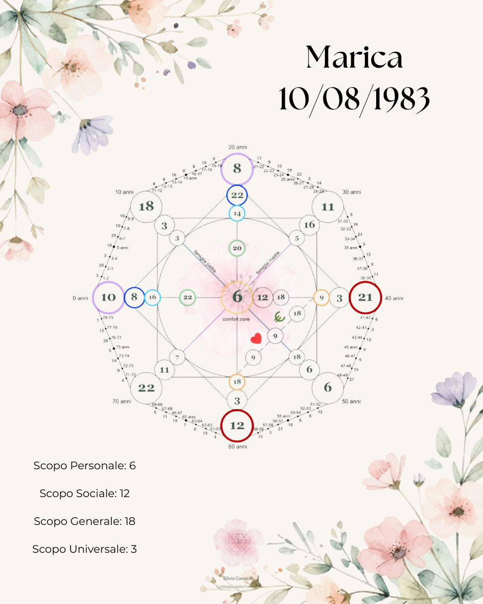
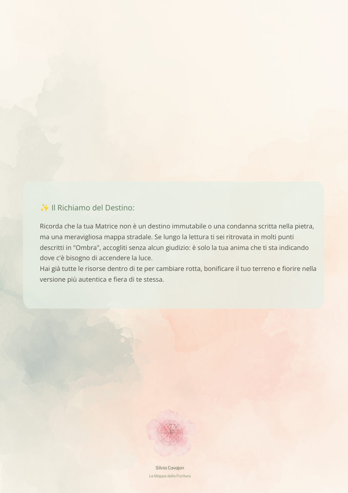

Scorri le pagine con calma: la traccia audio resta attiva mentre leggi.
Un tempo tutto per te
Ciao Silvia, qui trovi la tua lettura personale e le tracce audio da ascoltare con calma, seguendo il tuo ritmo.


Scorri le pagine con calma: la traccia audio resta attiva mentre leggi.
♪ L'audio continua mentre esplori il tuo percorso